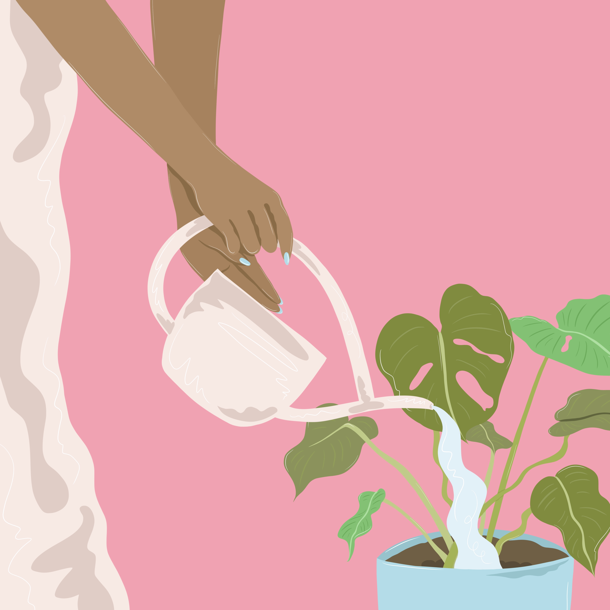
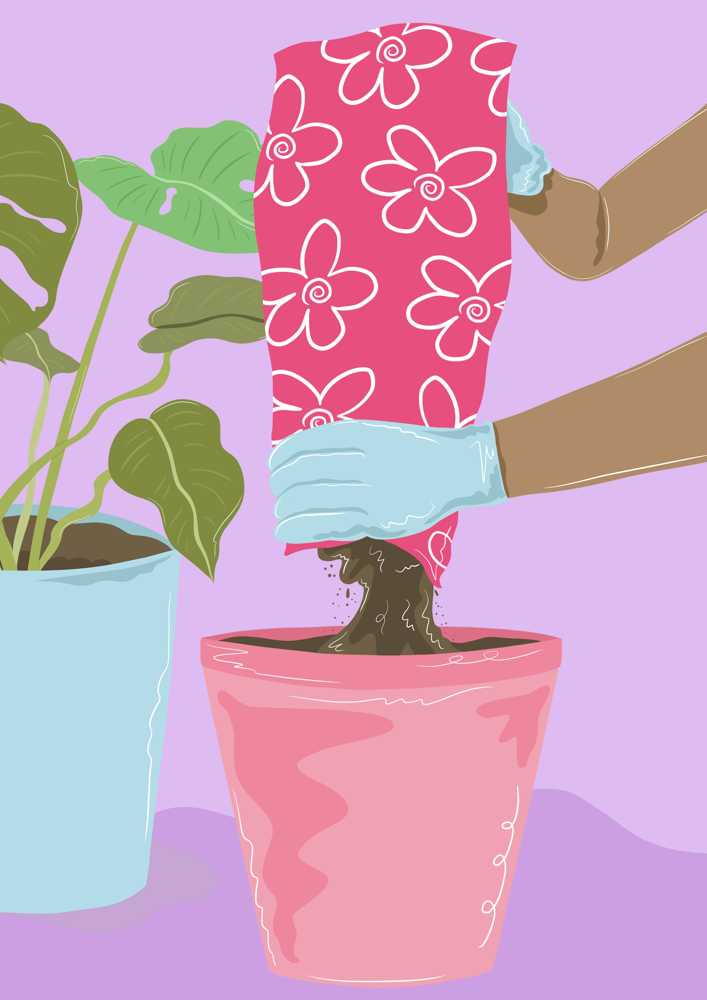
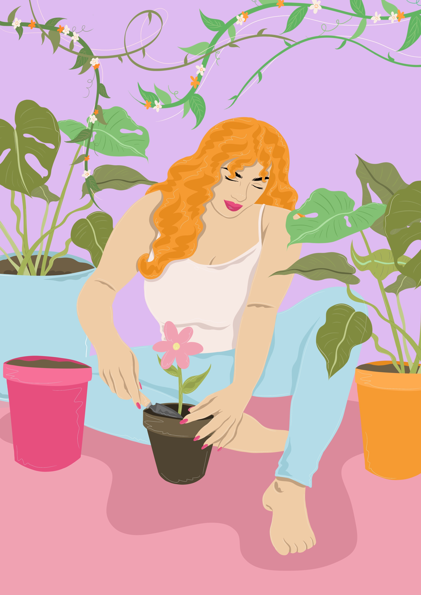

Home
History
Goodness of Plants
Plant Parenting
Terrarium Building
Plant Care
Resources
Affinity of Houseplants: A Beginners Guide
General Plant Care
Hint: Hover over the image to reveal the answer!
When should I...
1. Water My Plants ?

2. Feed My Plants?

3. Change The Soil?

Information courtesy of The Sill - Blog Articles | How to Fertilize... | How to Repot... | What does watering do...
Image Credit: Holly | Adobe Stock | Edu. Lic.
Background Image: Maksim Shebeko | Adobe Stock| Edu. Lic.